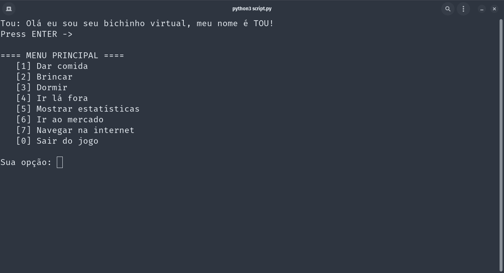

Mais sobre mim
Olá eu me chamo Júlio, desde quando eu era uma criança, sempre gostei muito de computadores e da maneira que eles funcionavam. Comecei estudar programação com projetos pequenos em Python, e atualmente, atuo como desenvolvedor web. Já fiz projetos usando frameworks como o Angular, mas atualmente trabalho em uma empresa que usa PHP como linguagem principal.
Meus trabalhos
- Tou üîó
- Indicador de filmes e s√©ries üîó
Ese projeto foi uma paródia que eu fiz de um jogo para celular, que inclusive, fez muito sucesso no passado. O motivo do projeto se chamar "Tou" foi um trocadilho, sendo que a letra "T" vem da palavra "texto", e o "joguinho" era todo baseado em texto. Uma das features que acho interessando é que ele usa CRUD para salvar seu progresso mesmo que você pare a sua execussão.
Sendo um dos projetos que tenho mais orgulho, ele consegue armazenar todos os seus filmes, separando em nome, categoria e ano, e toda vez que você precisar, ele vai estar nessa aplicação.